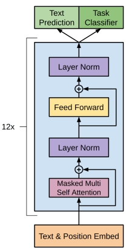

关于 · 归档 · 友链 · 订阅
计算多头注意力
2026年7月5日
多头注意力（Multi-Head Attention）的计算是 transformer 大模型的基石。然而，其计算却因为矩阵颠三倒四而变得不好直观理解。所以我写了这篇文章，做一下总结。
因为抽象的字母 a,b,c 会增加思考成本，所以这里凡是涉及到矩阵维数的时候，我都会用一个独一无二的质数来表示，这样给出的例子更具体，更方便理解。因为是独一无二的质数，因此其本身不一定要被看成是具体的数字，也可以看成只是一种编码。
线性代数复习
当我们说一个 a×b 矩阵的时候，我们说的是这个矩阵有 a 行和 b 列。这个矩阵可以看成由 a 个行向量组成，也可以看成由 b 个列向量组成。
一个 a×b 矩阵 A 乘以 b×c 矩阵 B ，会得到 a×c 的矩阵 R。R 的第 x 行第 y 列元素 Rxy 是 A 的第 x 行向量和 B 的第 y 列向量的内积。
从输入到输出
首先我们看一下输入输出。这里我们假设输入 3 个词元，每个词元加上位置编码之后都“嵌入”为一个 5 维向量。因此这里的输入是一个 3×5 的矩阵，我们记为 X。每一个词元是一个行向量，记为 X1,X2,X3。
而输出，需要和输入是大小相同的，也是一个 3×5 的矩阵，记为 Y。Y 的每一行记为 Y1,Y2,Y3。
Q、K、V
我们先看 Q 和 K。
假设对于每个词元，Q 和 K 都是 7 维向量；那么对于 3 个词元，Q 和 K 就是 3×7 的矩阵。为了得到 Q 和 K，定义参数 WQ 和 WK 为 5×7 的矩阵。然后做矩阵乘法：
QK=XWQ=XWK
将 K 转置之后和 Q 相乘，QKT 也就是 3×7 的矩阵乘以 7×3 的矩阵，得到一个 3×3 的矩阵。
对这个矩阵缩放，每一个数字都除以 7，然后加上因果掩码（Causal Mask），上三角变成负无穷。为了方便理解什么是因果掩码，这里举个例子，假如有一个 3×3 矩阵：
147258369
那么，加上因果掩码之后就会变成：
147−∞58−∞−∞9
然后对每一行进行 softmax 操作，此时负无穷会变成0，结果将是一个上三角为 0 的 3×3 矩阵。我们将其记作 S:
S=softmax(7QKT)
如果你不知道怎么是softmax操作，你可以先暂时把它理解成一种归一化，把 −∞ 到 +∞ 之间的所有数都映射到0到1之间，并且保证该行所有数字加起来等于1。
最后，我们假设对于每个词元，V 都是 11 维向量。那么 WV 应该是一个 5×11 的矩阵。根据：
V=XWV
得到 V 是一个 3×11 的矩阵。
将 S 和 V 相乘，得到：
H=SV
H 也是一个 3×11 的矩阵。
多头注意力
我们假设有 2 个头。也就是说，上面的 Q,K,V 实际上都有 2 个，WQ,WK,WV 也都相应有两个。也就是：
Q1K1V1Q2K2V2=XWQ1=XWK1=XWV1=XWQ2=XWK2=XWV2
因此，得到的 H 也有两个: H1,H2。这两个 H 都是 3×11 的矩阵。将这两个拼接起来，可以得到一个 3×22 的矩阵：
Concat(H1,H2)
输出
通过多头注意力，对于每一个输入的词元，我们都得到了一个 22 维的向量。而我们的输出需要和输入一样是 5 维。因此我们加上一个 22×5 的参数矩阵 WO。3×22 矩阵乘以 22×5 的矩阵，得到 3×5 的矩阵 Y：
Y=Concat(H1,H2)WO
输入输出关系分析
假如我们把上面算法当成黑箱。把所有参数统称为 W。也就是说：
W=(WQ1,WK1,WV1,WQ2,WK2,WV2,WO)
然后逐行分析输入参数和输出参数的抽象关系，可以写成：
Y1Y2Y3=f1(X1;W)=f2(X1,X2;W)=f3(X1,X2,X3;W)
其中，函数 f1,f2,f3 都是由算法和超参数确定的，不会变动，W 是可训练的参数。可以看到，输出的第 N 行，都由输入的前 N 行所确定。
KV Cache
我们假设在算出 Y 之后，给输入 X 加一个第4行 X4，而 X1,X2,X3 都保持不变。根据前述分析，此时，Y1,Y2,Y3 也是不变的，只需要计算 Y4=f4(X1,X2,X3,X4;W)。
可以看到所有前述中间结果中，3 行的矩阵，都会变成 4 行，而前三行则都保持不变。因此，如果能把前三行缓存下来，就只需要计算第四行就可以了。这样可以大大节省计算量。更进一步，我们可以注意到，矩阵 H 的第四行，甚至和 Q 的前三行毫无关系，因此事实上矩阵 Q 的内容用完就可以直接扔掉。这也正是 KV Cache 省钱的原理。
尾声
最后放上一张GPT原始论文里面的架构框图：

可以看到，唯一比较复杂的就是本文中提到的多头注意力。其它没有涉及的部分主要是残差连接、layer norm和FFN，不过这几个都没有什么难度，所以不再赘述。
Email: i (at) mistivia (dot) com